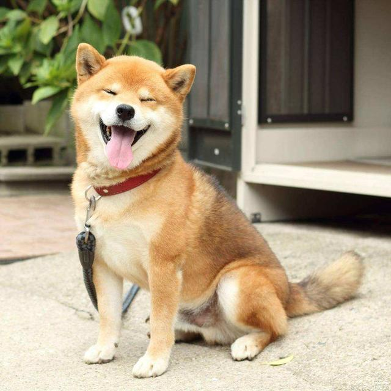
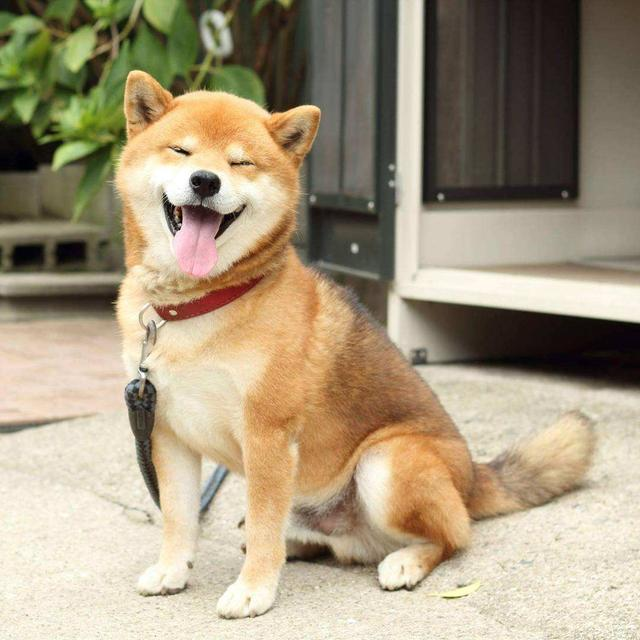

| 學名 | Canis lupus familiaris |
| 日語 | 柴犬／しばいぬ |
| 英文 | Shiba Inu |
「柴犬」發源於日本中央高地。在文獻上，為昭和初期的日本犬保存會的會刊「日本犬」所採用。
「柴」是「打柴人」的「柴」，指小型的雜木。由於柴犬能巧妙地穿過雜木幫助打獵，而且紅褐色的毛色與枯萎的柴相似，故名。
亦有人認為古語的「柴」，是把信州的柴村作為起源地。
柴犬面貌與秋田犬相似，也因此兩者經常被搞混。細分的話，秋田臉較柴犬圓，柴犬的耳朵與嘴較秋田尖，不過兩者最明顯的差別是體型，柴犬比秋田明顯嬌小可愛。
柴犬的特徵包括短毛、豎耳、捲尾等。屬中型犬，具有良好發展的肌肉。公犬計算至肩隆的身高約為38－41公分，母犬則為35－38公分。
中等身形的公柴犬平均體重約為9公斤，母柴犬則約為8公斤。體重內的骨頭占比適中。
柴犬天性較為大膽、獨立，同時也有頑固一面。
柴犬對於主人或其認可的人類較為忠誠，由於在古代是作為追緝獵物的獵犬使用，因此通常具有一定警戒心與攻擊性，
一般來說，母柴犬的攻擊性比公柴犬來得較為兇猛。
相較其他犬類，柴犬與貓比較容易和平相處。
柴犬是一種相對自律的犬種，並經常喜歡保持自己身體的潔淨。柴犬經常會用舌頭清潔自己的腳掌和腿部。人飼養的柴犬通常能夠很快適應室內生活。
 
